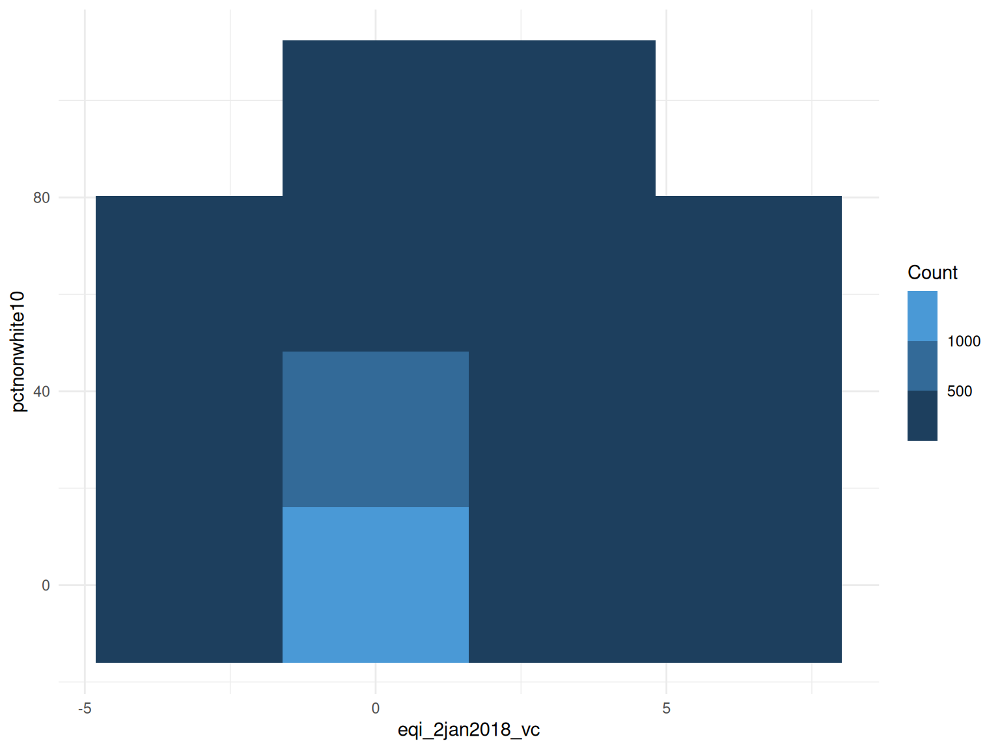
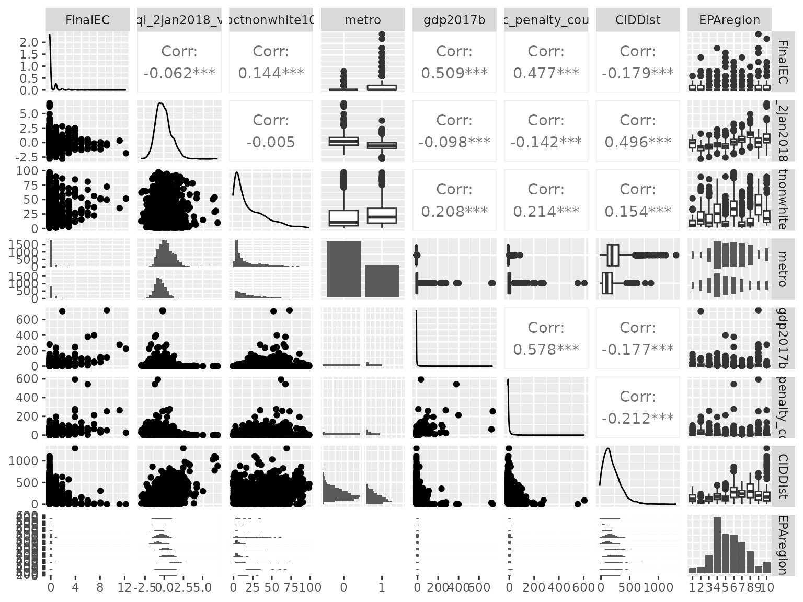
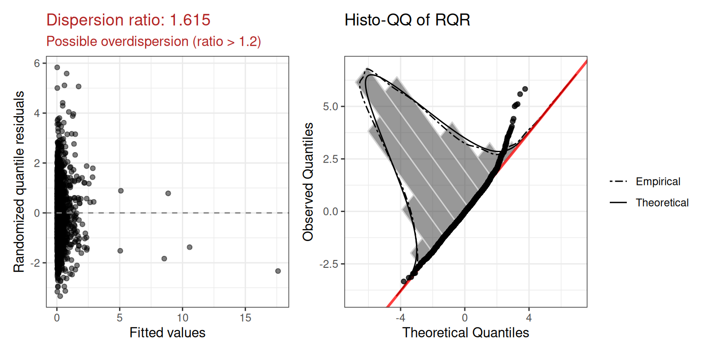
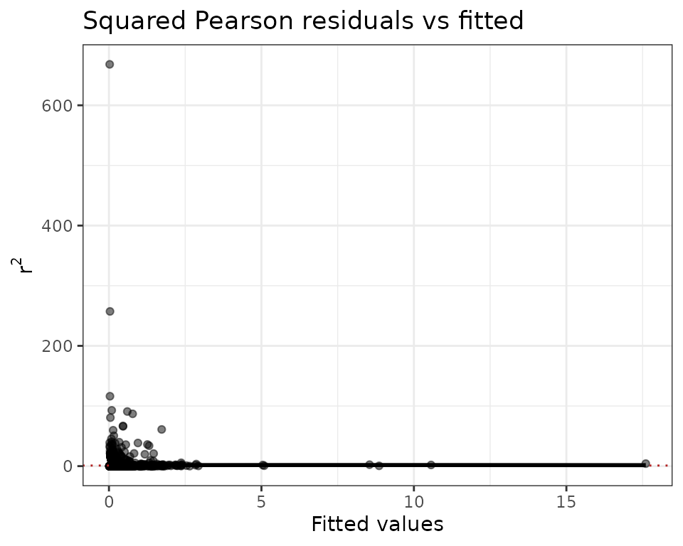
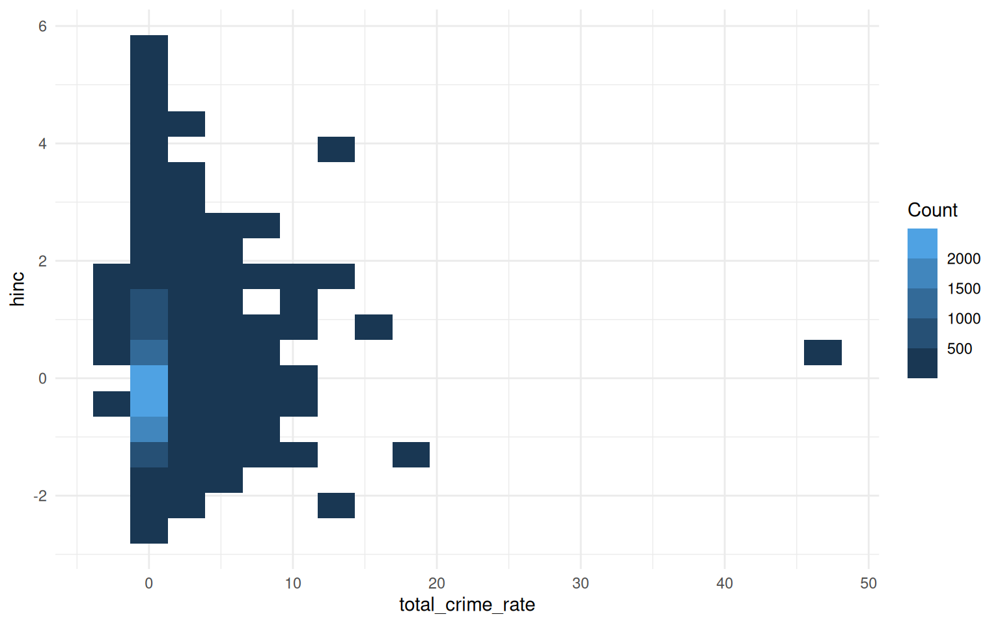
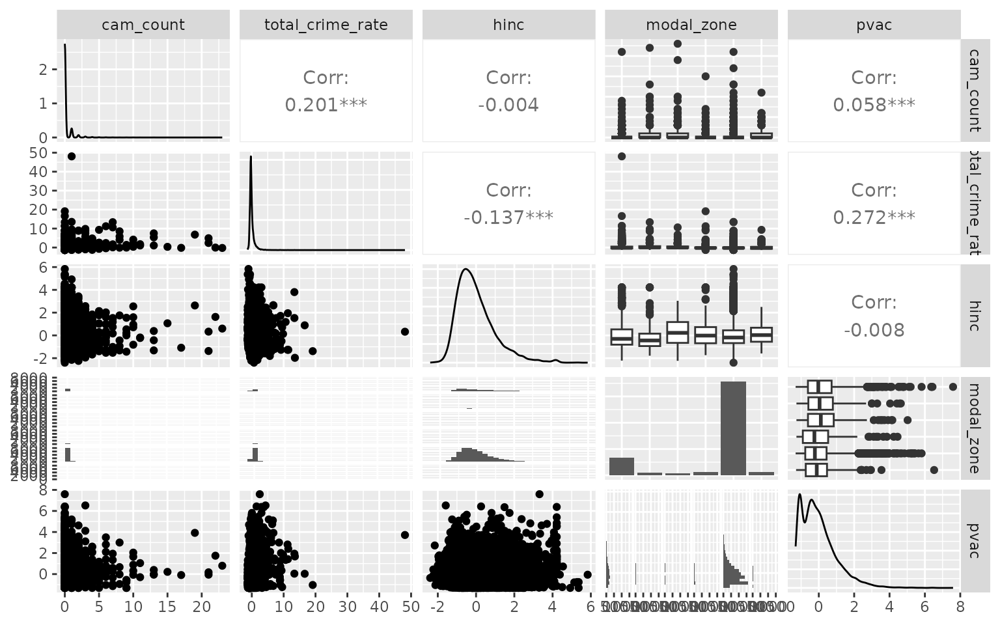
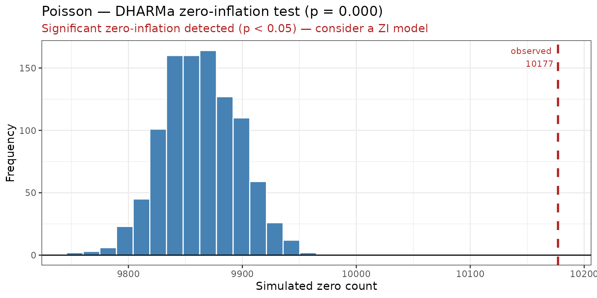

Overview
glmOJ provides a streamlined workflow for fitting,
diagnosing, and interpreting count regression models. The four supported
families are:
| Function | Model |
|---|---|
poissonGLM() |
Poisson GLM |
negbinGLM() |
Negative Binomial GLM |
zeroinflPoissonGLM() |
Zero-Inflated Poisson |
zeroinflNegbinGLM() |
Zero-Inflated Negative Binomial |
A general-purpose wrapper countGLM() fits all four and
selects the best by a user-chosen criterion (decide):
"BIC" (default), "AIC", "LogLik",
or "McFadden" (McFadden pseudo-R²).
Case Study: Federal Environmental Crime Prosecutions
Greenberg et al. (2026) investigate how environmental and social
factors influence where EPA criminal prosecutions occur across 3,143 US
counties (2011–2020). The response variable FinalEC is a
count of criminal prosecutions per county.
data("Greenberg26.dat")1. Data Exploration
Before fitting, summarizeCountData() gives a quick
numerical and graphical overview of the count response alongside each
predictor.
summarizeCountData(
FinalEC ~ eqi_2jan2018_vc +
pctnonwhite10 +
metro +
gdp2017b +
fac_penalty_count +
CIDDist +
EPAregion,
data = Greenberg26.dat
)
#> $summary
#> mean var var_mean_ratio n_zero n_total
#> 1 0.2356564 0.6490525 2.754232 2654 3085
#>
#> $counts
#> count freq
#> 1 0 2654
#> 2 1 299
#> 3 2 66
#> 4 3 31
#> 5 4 14
#> 6 5 5
#> 7 6 6
#> 8 7 3
#> 9 8 3
#> 10 9 2
#> 11 11 1
#> 12 12 1
#>
#> $plot
#>
#> $pairs_plot
2. Poisson Regression
We first fit a Poisson GLM with the Overall Environmental Quality Index and demographic/geographic controls.
mod.pois <- poissonGLM(
FinalEC ~ eqi_2jan2018_vc +
pctnonwhite10 +
metro +
gdp2017b +
fac_penalty_count +
CIDDist +
EPAregion,
data = Greenberg26.dat
)Coefficients (exponentiated)
mod.pois$coefficients
#> term exp.coef lower.95 upper.95 p.value stars
#> 1 (Intercept) 0.1823719 0.1218639 0.2729236 1.304191e-16 ***
#> 2 eqi_2jan2018_vc 1.0587100 0.9554459 1.1731349 2.759131e-01
#> 3 pctnonwhite10 1.0193442 1.0149745 1.0237327 2.308798e-18 ***
#> 4 metro1 3.3042257 2.7087270 4.0306415 4.500518e-32 ***
#> 5 gdp2017b 1.0020768 1.0013743 1.0027798 6.708917e-09 ***
#> 6 fac_penalty_count 1.0035038 1.0025814 1.0044270 9.019065e-14 ***
#> 7 CIDDist 0.9968844 0.9961277 0.9976416 7.995795e-16 ***
#> 8 EPAregion2 0.6380126 0.4071818 0.9997010 4.984764e-02 *
#> 9 EPAregion3 0.3930124 0.2500571 0.6176939 5.159508e-05 ***
#> 10 EPAregion4 0.3419217 0.2283596 0.5119578 1.880591e-07 ***
#> 11 EPAregion5 0.6331705 0.4259880 0.9411178 2.381632e-02 *
#> 12 EPAregion6 0.3535927 0.2288448 0.5463433 2.826577e-06 ***
#> 13 EPAregion7 0.9194406 0.6000503 1.4088336 6.996862e-01
#> 14 EPAregion8 0.9845458 0.6244062 1.5524036 9.465543e-01
#> 15 EPAregion9 0.6802879 0.4344711 1.0651838 9.219375e-02 .
#> 16 EPAregion10 1.6355984 1.0812709 2.4741092 1.980635e-02 *Model fit
mod.pois$diagnostics$plot
The dispersion ratio of 1.615 is flagged in red — the observed variance is ~60% larger than expected under Poisson, suggesting overdispersion. We also inspect the squared Pearson residual plot:
mod.pois$diagnostics$r2_plot
The wedge shape confirms the mean-variance relationship is not well captured by the Poisson assumption.
3. Negative Binomial Regression
The negative binomial adds a free dispersion parameter to handle overdispersion.
mod.nb <- negbinGLM(
FinalEC ~ eqi_2jan2018_vc +
pctnonwhite10 +
metro +
gdp2017b +
fac_penalty_count +
CIDDist +
EPAregion,
data = Greenberg26.dat,
control = stats::glm.control(maxit = 100)
)Coefficients (exponentiated)
mod.nb$coefficients
#> term exp.coef lower.95 upper.95 p.value stars
#> 1 (Intercept) 0.1739476 0.1009294 0.2997917 3.023453e-10 ***
#> 2 eqi_2jan2018_vc 0.9876521 0.8594207 1.1350166 8.609982e-01
#> 3 pctnonwhite10 1.0142370 1.0081961 1.0203142 3.518093e-06 ***
#> 4 metro1 2.6619963 2.0970839 3.3790847 8.626855e-16 ***
#> 5 gdp2017b 1.0075352 1.0053273 1.0097479 1.988481e-11 ***
#> 6 fac_penalty_count 1.0095626 1.0068424 1.0122902 4.726959e-12 ***
#> 7 CIDDist 0.9980886 0.9971817 0.9989964 3.709074e-05 ***
#> 8 EPAregion2 0.7248601 0.3804835 1.3809327 3.278330e-01
#> 9 EPAregion3 0.3342143 0.1793891 0.6226643 5.559635e-04 ***
#> 10 EPAregion4 0.3282850 0.1881526 0.5727855 8.778317e-05 ***
#> 11 EPAregion5 0.5182600 0.2972138 0.9037044 2.051048e-02 *
#> 12 EPAregion6 0.3174128 0.1737298 0.5799287 1.901195e-04 ***
#> 13 EPAregion7 0.7815558 0.4357070 1.4019271 4.083921e-01
#> 14 EPAregion8 0.9084431 0.4852015 1.7008789 7.641150e-01
#> 15 EPAregion9 0.5513771 0.2775557 1.0953358 8.914123e-02 .
#> 16 EPAregion10 1.6502074 0.8996619 3.0268976 1.055884e-014. Comparing Models: Likelihood Ratio Test
Because the Poisson model is nested within the negative binomial
(Poisson is NB with
),
we can use a likelihood ratio test. The underlying
glm/glm.nb fit objects are available via
$model:
lmtest::lrtest(mod.pois$model, mod.nb$model)
#> Likelihood ratio test
#>
#> Model 1: FinalEC ~ eqi_2jan2018_vc + pctnonwhite10 + metro + gdp2017b +
#> fac_penalty_count + CIDDist + EPAregion
#> Model 2: FinalEC ~ eqi_2jan2018_vc + pctnonwhite10 + metro + gdp2017b +
#> fac_penalty_count + CIDDist + EPAregion
#> #Df LogLik Df Chisq Pr(>Chisq)
#> 1 16 -1573.7
#> 2 17 -1465.2 1 217.13 < 2.2e-16 ***
#> ---
#> Signif. codes: 0 '***' 0.001 '**' 0.01 '*' 0.05 '.' 0.1 ' ' 1The negative binomial model is significantly better (), confirming that overdispersion is a genuine problem for the Poisson fit.
5. Using the countGLM Wrapper
Rather than fitting each model manually, countGLM() fits
all four families at once and selects the best by the criterion
specified in decide (default "BIC") — arriving
at the same conclusion automatically.
Overall EQI formula
result1 <- countGLM(
FinalEC ~ eqi_2jan2018_vc +
pctnonwhite10 +
metro +
gdp2017b +
fac_penalty_count +
CIDDist +
EPAregion,
data = Greenberg26.dat
)
print(result1)
#>
#> Call:
#> countGLM(formula = FinalEC ~ eqi_2jan2018_vc + pctnonwhite10 +
#> metro + gdp2017b + fac_penalty_count + CIDDist + EPAregion,
#> data = Greenberg26.dat)
#>
#> Model comparison (sorted by BIC (ascending)):
#> model AIC BIC
#> negbin 2964.32 3066.9
#> poisson 3179.45 3276.0
#>
#> Selected model: negbin
#>
#> Recommendation:
#> Negative Binomial was selected by BIC (BIC = 3066.90). The Poisson
#> dispersion ratio is 1.62 (> 1.5), indicating overdispersion. DHARMa
#> zero-inflation test is significant for the Poisson fit (p = 0.000)
#> but not for the Negative Binomial fit (p = 0.654); excess zeros may
#> be explained by overdispersion alone.The wrapper selects the same winner as the manual LRT. Individual
fits remain accessible: result1$fits$negbin,
result1$fits$poisson, etc.
Sub-index formula
The researchers also evaluated whether separate Water, Air, Land, and
Socioeconomic indices were more informative than the composite Overall
EQI. countGLM handles this in one call:
result2 <- countGLM(
FinalEC ~ water_eqi_2jan2018_vc +
land_eqi_2jan2018_vc +
air_eqi_2jan2018_vc +
sociod_eqi_2jan2018_vc +
pctnonwhite10 +
metro +
gdp2017b +
fac_penalty_count +
CIDDist +
EPAregion,
data = Greenberg26.dat
)
print(result2)
#>
#> Call:
#> countGLM(formula = FinalEC ~ water_eqi_2jan2018_vc + land_eqi_2jan2018_vc +
#> air_eqi_2jan2018_vc + sociod_eqi_2jan2018_vc + pctnonwhite10 +
#> metro + gdp2017b + fac_penalty_count + CIDDist + EPAregion,
#> data = Greenberg26.dat)
#>
#> Model comparison (sorted by BIC (ascending)):
#> model AIC BIC
#> negbin 2953.72 3074.41
#> poisson 3144.98 3259.64
#>
#> Selected model: negbin
#>
#> Recommendation:
#> Negative Binomial was selected by BIC (BIC = 3074.41). The Poisson
#> dispersion ratio is 1.49, consistent with equidispersion. DHARMa
#> zero-inflation test is significant for the Poisson fit (p = 0.000)
#> but not for the Negative Binomial fit (p = 0.828); excess zeros may
#> be explained by overdispersion alone.Again the negative binomial is selected. The non-nested comparison
between these two winning models (overall EQI vs sub-indices) can be
done with a Vuong test via
nonnest2::vuongtest(result1$fits$negbin$model, result2$fits$negbin$model).
6. Coefficient Interpretation
interpret_coef() translates any exponentiated
coefficient into a plain-language statement, with a 95% CI and an
automatic note when the predictor is not discernible from zero (p >
0.05).
Significant predictor
interpret_coef(mod.nb, "pctnonwhite10")
#> Holding all other predictors constant, a one-unit increase in pctnonwhite10 is associated with a 1.4% increase in the expected count of FinalEC (exp(β) = 1.014, 95% CI: [1.008, 1.020]).Non-significant predictor
interpret_coef(mod.nb, "eqi_2jan2018_vc")
#> Holding all other predictors constant, a one-unit increase in eqi_2jan2018_vc is associated with a 1.2% decrease in the expected count of FinalEC (exp(β) = 0.988, 95% CI: [0.859, 1.135]).
#> Note: this coefficient is not discernibly different from zero (p = 0.861).The note about discernibility is added automatically.
Using with countGLM
Pass the countGLM result directly — it delegates to the
best-fitting model:
interpret_coef(result2, "pctnonwhite10")
#> Holding all other predictors constant, a one-unit increase in pctnonwhite10 is associated with a 1.4% increase in the expected count of FinalEC (exp(β) = 1.014, 95% CI: [1.008, 1.020]).Zero-inflated models: specifying the component
For zero-inflated models, use component = "count"
(default) or component = "zero":
interpret_coef(zi_fit, "pctnonwhite10", component = "count")
interpret_coef(zi_fit, "pctnonwhite10", component = "zero")Case Study 2: Urban Surveillance Camera Counts (Dahir 2025)
Dahir (2025) models the number of surveillance cameras per census
tract across ten US cities. The response cam_count is a
non-negative integer with 87.6% zeros and a variance-to-mean ratio of
approximately 3.6 — classic signs of both excess zeros and
overdispersion.
data("Dahir25.dat")7. Data Exploration
summarizeCountData(
cam_count ~ total_crime_rate + hinc + modal_zone + pvac,
data = Dahir25.dat
)
#> $summary
#> mean var var_mean_ratio n_zero n_total
#> 1 0.2172117 0.7840397 3.609565 10177 11620
#>
#> $counts
#> count freq
#> 1 0 10177
#> 2 1 977
#> 3 2 257
#> 4 3 97
#> 5 4 44
#> 6 5 20
#> 7 6 14
#> 8 7 8
#> 9 8 4
#> 10 9 5
#> 11 10 5
#> 12 11 2
#> 13 13 3
#> 14 15 1
#> 15 17 1
#> 16 19 1
#> 17 21 2
#> 18 22 1
#> 19 23 1
#>
#> $plot
#>
#> $pairs_plot
The summary table makes the issue concrete: the variance-to-mean ratio far exceeds 1 and the frequency table is dominated by zeros. Camera placement varies substantially by land-use zone — mixed and industrial tracts have cameras in roughly 28–42% of cases, while residential tracts (the majority, n = 8913) have cameras in fewer than 10%. This mixture of structurally camera-free tracts alongside genuinely high-count commercial zones is exactly the setting where zero-inflated or overdispersed count models are needed.
8. Poisson and Zero-Inflated Poisson
We may want to start by manually fitting a Poisson model to confirm the overdispersion and zero-inflation diagnostics. The formula includes a quadratic term for each predictor to allow for non-linear effects, and road length is included as an offset:
pois.cam <- poissonGLM(
cam_count ~ pnhwht +
pnhblk +
entropy_rank +
total_crime_rate +
modal_zone +
pop +
hinc +
pvac +
mhmval +
city +
offset(log_road_length) +
I(pnhwht^2) +
I(pnhblk^2) +
I(entropy_rank^2),
data = Dahir25.dat
)
print(pois.cam)
#>
#> Call:
#> poissonGLM(formula = cam_count ~ pnhwht + pnhblk + entropy_rank +
#> total_crime_rate + modal_zone + pop + hinc + pvac + mhmval +
#> city + offset(log_road_length) + I(pnhwht^2) + I(pnhblk^2) +
#> I(entropy_rank^2), data = Dahir25.dat)
#>
#> Model family: poissonGLM
#>
#> Coefficients (on response scale):
#> term exp.coef lower.95 upper.95 p.value stars
#> (Intercept) 0.1337 0.1055 0.1695 0.0000 ***
#> pnhwht 0.9634 0.8968 1.0349 0.3067
#> pnhblk 0.8723 0.8106 0.9387 0.0003 ***
#> entropy_rank 1.4478 0.7754 2.7031 0.2454
#> total_crime_rate 1.0908 1.0796 1.1022 0.0000 ***
#> modal_zoneindustrial 1.1534 0.9558 1.3917 0.1366
#> modal_zonemixed 1.2535 1.0415 1.5087 0.0168 *
#> modal_zonepublic 0.5876 0.4649 0.7428 0.0000 ***
#> modal_zoneresidential 0.4298 0.3742 0.4937 0.0000 ***
#> modal_zoneroads 0.6960 0.4447 1.0895 0.1130
#> pop 1.1213 1.0990 1.1442 0.0000 ***
#> hinc 0.7716 0.7305 0.8149 0.0000 ***
#> pvac 1.1807 1.1373 1.2258 0.0000 ***
#> mhmval 1.1586 1.1036 1.2164 0.0000 ***
#> cityBoston 1.2368 1.0563 1.4481 0.0083 **
#> cityChicago 0.1851 0.1546 0.2216 0.0000 ***
#> cityLos Angeles 0.0495 0.0399 0.0615 0.0000 ***
#> cityMilwaukee 0.3249 0.2688 0.3927 0.0000 ***
#> cityNew York 0.2073 0.1776 0.2421 0.0000 ***
#> cityPhiladelphia 0.4482 0.3808 0.5274 0.0000 ***
#> citySan Francisco 0.6071 0.5090 0.7241 0.0000 ***
#> citySeattle 0.1768 0.1440 0.2171 0.0000 ***
#> cityWashington 0.4568 0.3008 0.6937 0.0002 ***
#> I(pnhwht^2) 1.0487 0.9979 1.1020 0.0607 .
#> I(pnhblk^2) 1.0139 0.9881 1.0402 0.2939
#> I(entropy_rank^2) 1.2363 0.7094 2.1546 0.4541
#>
#> Dispersion ratio: 1.8401
#> AIC: 11299.96The DHARMa zero-inflation test result:
zi <- pois.cam$diagnostics$zi_test
cat(sprintf(
"DHARMa zero-inflation test: p = %.4f | Detected: %s\n",
zi$p_value,
zi$detected
))
#> DHARMa zero-inflation test: p = 0.0000 | Detected: TRUE
zi$plot
8. Automatic Model Selection with countGLM
countGLM() fits all four count families and selects the
best by the criterion in decide (default
"BIC"). Road length (log_road_length) is
included as an offset in the count component; because
ziformula = NULL, it is automatically applied to the
zero-inflation component as well — countGLM prints a note
confirming this:
result_cam <- countGLM(
cam_count ~ pnhblk +
pnhwht +
total_crime_rate +
hinc +
pvac +
modal_zone +
offset(log_road_length),
data = Dahir25.dat
)
print(result_cam)
#>
#> Call:
#> countGLM(formula = cam_count ~ pnhblk + pnhwht + total_crime_rate +
#> hinc + pvac + modal_zone + offset(log_road_length), data = Dahir25.dat)
#>
#> Model comparison (sorted by BIC (ascending)):
#> model AIC BIC
#> negbin 11306.16 11394.49
#>
#> Selected model: negbin
#>
#> Recommendation:
#> Negative Binomial was selected by BIC (BIC = 11394.49).The comparison table shows AIC and BIC for all four families, sorted by the selection criterion. The selected model is negbin. The recommendation captures the relevant dispersion and zero-inflation diagnostics automatically, explaining why this family was preferred.
9. Interpreting the Winning Model
interpret_coef() delegates to the best-fitting model
automatically:
interpret_coef(result_cam, "total_crime_rate")
#> Holding all other predictors constant, a one-unit increase in total_crime_rate is associated with a 39.2% increase in the expected rate of cam_count per unit of exposure (exp(β) = 1.392, 95% CI: [1.333, 1.455]).
interpret_coef(result_cam, "hinc")
#> Holding all other predictors constant, a one-unit increase in hinc is associated with a 19.5% decrease in the expected rate of cam_count per unit of exposure (exp(β) = 0.805, 95% CI: [0.744, 0.871]).For zero-inflated models, the count and zero components can be interpreted separately. The count component describes the expected camera count among tracts that are in the counting process; the zero component describes the odds of being a structural zero (a tract that never receives a camera):
interpret_coef(result_cam, "total_crime_rate", component = "count")
interpret_coef(result_cam, "total_crime_rate", component = "zero")